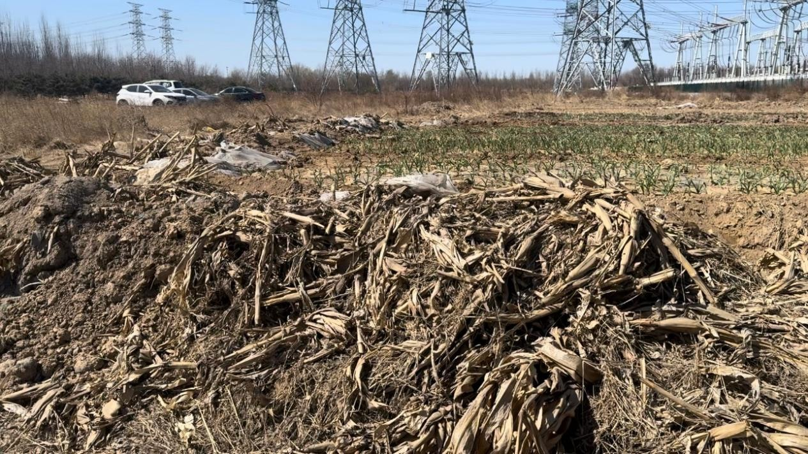
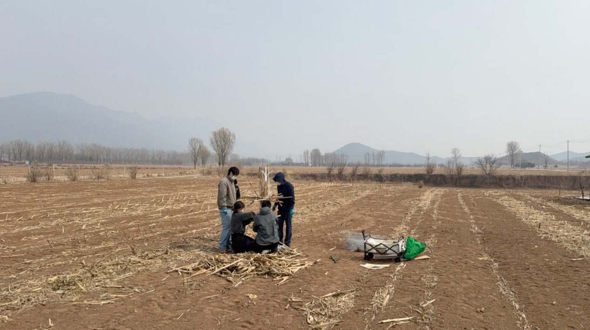
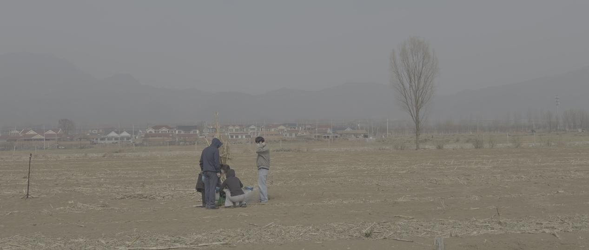
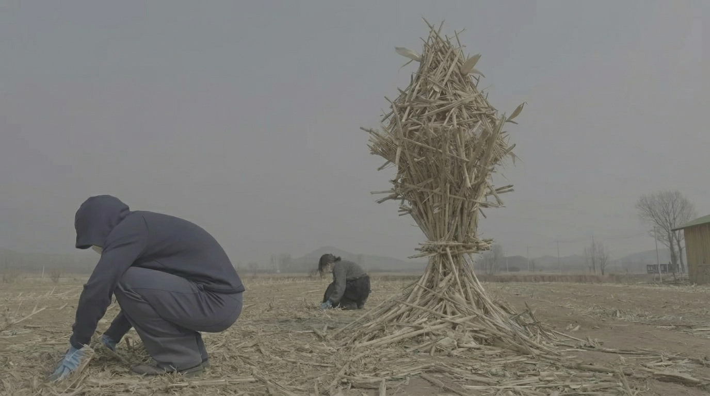
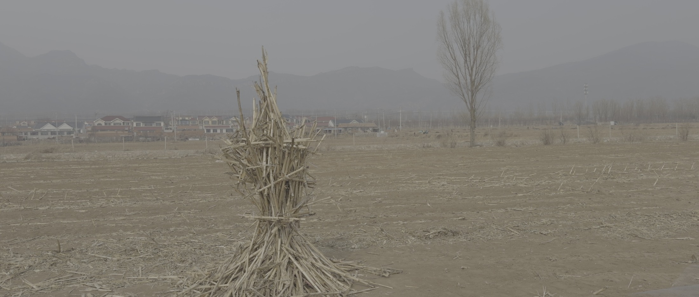

Field-based learning with corn stalks, discarded stone, and the ecological relationships of a place.
Abstract
Place-based design education connects classroom learning with real social contexts. Yet courses can reduce places to cultural resources to be extracted, treating design outcomes as translations of local representations while overlooking wider ecological relationships. This study brings ecological art methodologies into place-based design education, examining the rationale and pathways for their integration through teaching cases. It argues that ecological art can help students develop more layered, sustained relationships with places and respond to local ecosystems as interconnected wholes, offering a transferable approach to expanding the ecological dimensions of design education.
This teaching study explores how ecological art can shift design education from collecting local visual motifs toward understanding relationships among materials, communities, and environments.
Two field settings
Undergraduate design students worked in agricultural fields and a disused stone site near Beijing. One group gathered and assembled corn stalks after harvest; another rearranged existing stones with minimal intervention. Student works became ways to consider agricultural cycles, material histories, and the changing life of a site.
A recurring process
The teaching approach connects ecological perception, relational understanding, and situated action. Students returned to their observations and revised their understanding through making and reflection. The images show student projects and fieldwork documented in the supplied research materials.
Withering and Flourishing
This art practice moves into the fields and takes root in the land. Participants collected and sorted dry corn stalks that had been treated as agricultural waste, binding and shaping them into installations. Working with these fragile materials offered a way to reconsider the value of discarded matter, understand crop life cycles, and connect artistic making with ecological processes.

Corn stalks left in the field after harvest.

Collecting and assembling corn stalks.
Withering and Flourishing



Building with Stone
At a disused stone site shaped by human activity, participants observed, combined, and rearranged discarded stone into a land-based composition. Small interventions invited reflection on environmental responsibility and the relationships among people, nature, art, and society, bringing attention back to materials that remained part of the landscape.